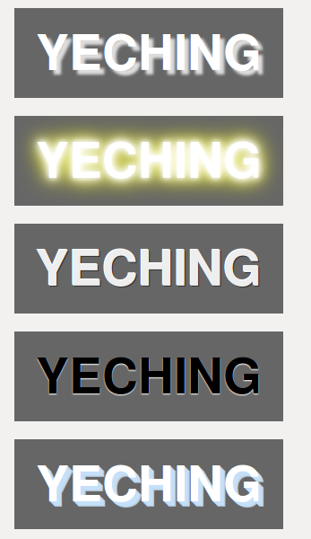

实现各种文字效果，除了使用photoshop外,还可以使用css的text-shadow属性实现效果。主要是配合好背景色，文字阴影和文本前景色。可以制作浮动效果，3D效果，雕刻效果，闪光效果。先看看效果图：
 查看演示 下载源码语法：text-shadow: h-shadow v-shadow blur color;
下面是css源代码：
*{margin:0;padding:0;}
body{margin:20px;}
.text-demo{
width:300px;
height:100px;
background: #666; font: bold 55px/100% "微软雅黑", "Lucida Grande", "Lucida Sans", Helvetica, Arial, Sans;
margin-bottom:20px;
color: #fff;
text-transform: uppercase;
text-align:center;
line-height:100px;
}
.text-shadow1{
text-shadow: 5px 5px 2px #ddd;
}
.text-shadow2{
/*改变不同的模糊半径和颜色*/
text-shadow: 0 0 5px white,0 0 10px white,0 0 15px white, 0 0 20px yellow, 0 0 30px yellow;
}
.text-shadow3{
/*把模糊半径设置为0*/
color: #eeeeee;
text-shadow: -1px -1px 0 #fff,1px 1px 0 #333,1px 1px 0 #444;
}
.text-shadow4{
/*在单个方向设置offset，模糊半径小一点*/
color: #000;
text-shadow: 0 1px 1px #fff;
}
.text-shadow5{
/*制作多个图层，然后每次移动1px距离，形成连续的感觉*/
color: #fff;
text-shadow: 1px 1px rgba(197, 223, 248,0.8),2px 2px rgba(197, 223, 248,0.8),3px 3px rgba(197, 223, 248,0.8),4px 4px rgba(197, 223, 248,0.8),5px 5px rgba(197, 223, 248,0.8),6px 6px rgba(197, 223, 248,0.8);
}
.text-shadow6{
color: #fff;
text-shadow: -1px -1px rgba(197, 223, 248,0.8),-2px -2px rgba(197, 223, 248,0.8),-3px -3px rgba(197, 223, 248,0.8),-4px -4px rgba(197, 223, 248,0.8),-5px -5px rgba(197, 223, 248,0.8),-6px -6px rgba(197, 223, 248,0.8);
}